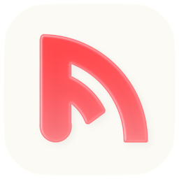

A simple, distraction-free and lightweight RSS reader for macOS.
Download for Mac
Feedy uses the three-column layout you know from Mail: feeds on the left, articles in the middle, reading on the right.
Add any RSS, Atom or JSON Feed just by pasting its address.
Always know what you've missed. Mark articles as read or unread in one click.
Every article gets the same typography, no matter which site it comes from.
Make text bigger or smaller with ⌘ + and ⌘ −.
Translate articles from English to Italian. Everything happens on your Mac.
Find any article by title or author across all your feeds.
Built in Swift for macOS. No account, no subscription: your feeds stay on your Mac.


The first launch takes one extra step. You only do it once.
That's it. From now on Feedy opens normally, like any other app.
Feedy is an independent project and isn't distributed through the Apple Developer Program, so it isn't “notarized” by Apple. macOS blocks apps like this on first launch as a precaution. It doesn't mean the app is damaged or unsafe.
You can unblock the app from Terminal. Open Terminal (in Applications → Utilities), paste this command and press Return:
xattr -dr com.apple.quarantine /Applications/Feedy.appThen open Feedy as usual. The same command also fixes the “Feedy is damaged and can't be opened” message.